SetSelectedState
This next section breaks down the changes I implemented to the SetSelectedState script, describing the methods used with explanations and referencing.
Using Awake():
I used Awake() instead of Start(). Unity calls awake when loading an
instance of a script component. This ensures that the script runs when the game objects that it is
assigned to is initialised and
stores the original material applied to the prefab before any interaction takes place.
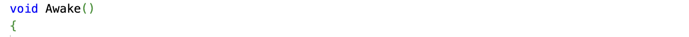
Technologies, U. (n.d.) Event function execution order, Unity.. Available at: https://docs.unity3d.com/Manual/execution-order.html
Caching the MeshRenderer:
The original SetSelectedState script used GetComponent every time the selection state
updates. In
Unity Documentation it recommends creating a reference to a component of a type so that GetComponent
is only called once in Awake() and after that the script reuses the stored reference. This is
intended to improve efficiency.
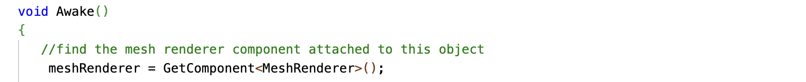
Technologies, U. (n.d.) Component.getcomponent, Unity.. Available at: https://docs.unity3d.com/ScriptReference/Component.GetComponent.html
Adding Null
While developing this aspect of the project I ran into some issues which prompted me to add some null checks. In the event that the script cannot locate a reference, this prevents getting null reference errors at runtime.
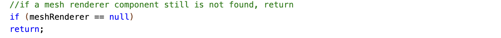
Technologies, U. (n.d.) Null references, Unity.. Available at: https://docs.unity3d.com/6000.1/Documentation/Manual/null-reference-exception.html
Toggling Selection State
The previous script used SetSelected() and SetUnselected(). After some
research I learnt then
introducing a Toggle event would solve the issue I had earlier with the object not retaining its
altered material until tapped again. I researched Boolean state management. To summarise my
understanding, a boolean stores the current state where ‘= False’ (in this instance)
means the
object is unselected and ‘= True’ means the object is selected. When the interaction
event happens
this variable switches, and the material of the object is switched accordingly. This in turn creates
the toggling effect. This also means the object can switch between the two states using just one
interactable event (Select Entered).
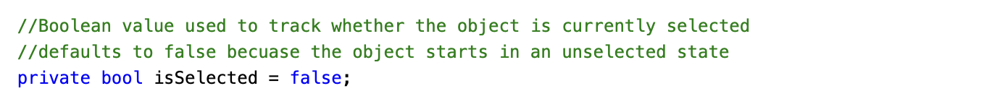
BillWagner (2022).bool type - C# reference - C#.. Available at: https://learn.microsoft.com/en-us/dotnet/csharp/language-reference/builtin-types/bool
Prefabs
This section details the process of importing new Assets into Unity including custom materials, 3D models and sprite sheet animations.
Interactive Text Boxes
Once I'd got the interactable object functioning, I decided I would use this to display the interpretation of the card's meaning, starting with a one-word description and on touch interaction changing to an extended interpretation of the card. I manually adjusted the sizing of the cube to appear thin and rectangular, like a text box. I then imported PNGs of the card interpretation designs that I had created in photoshop and created two new materials, assigning the png images to them.

Image File of the Card Interpretation Design.
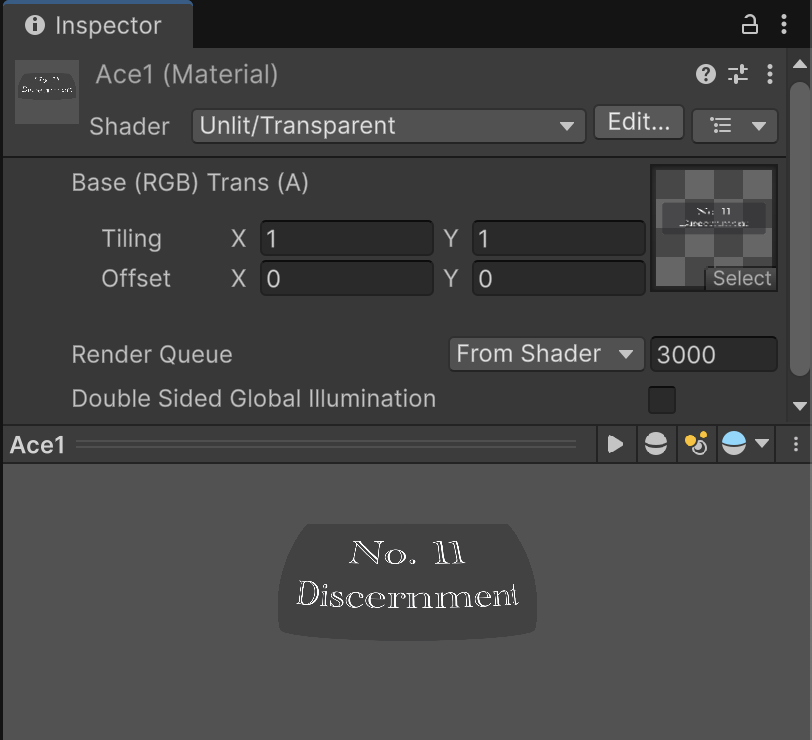
Imported Image Assigned to a New Material
In the inspector of the images I changed the texture type to support transparent images. The text boxes I designed have curved corners and a semi transparent body so it was important to ensure that transparency was supported. After this I substituted the original materials on the interactable object with the new ones I had created and from there, had functional, interactive text boxes.
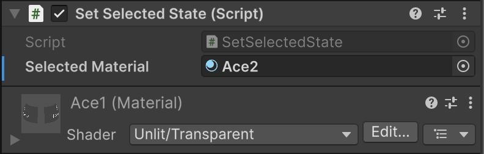
New Material Assigned to the SetSelectedState Component in the Interactable Objects Inspector.
Animated 3D objects
At this stage I was ready to start importing 3D objects. I ultimately decided that I would look for assets online from the Unity asset store and Sketchfab. Sketchfab in particular had a lot of free animated 3D models which worked well for my project. I have done my best to reference all online assets at the bottom of this page.
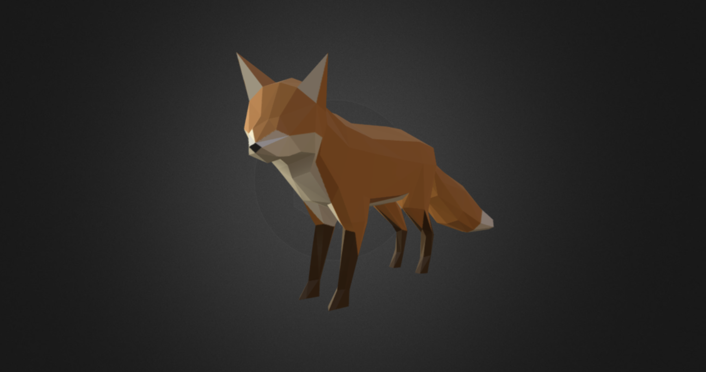
3D animated Fox Model Asset Downloaded From Sketchfab.
I had to install a unity extension that supported GLB imports which I did through a Github link, referenced below. This effectively just increased the range of file types, and by extension, assets that I was able to use for this project.
GitHub. (2025).Build software better, together. Available at: https://github.com/KhronosGroup/UnityGLTF
Animtation Controllers
When it came to using animated imported assets, I had to learn how to create and implement animation controllers within unity. From the plus icon in the project menu, you add an animation controller; open it, attach the animation associated with the chosen model and then add the controller to the model prefabs animator component in the inspector.
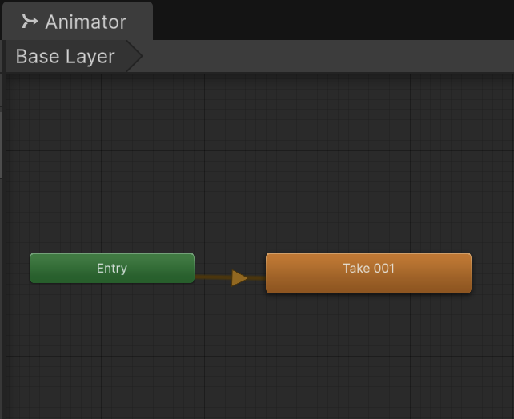
Screenshot of the Animation Controller in Unity.
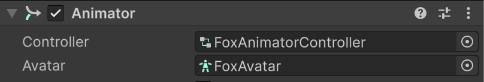
Screenshot of the Animator Component Assigned to the Model Prefab in the Inspector.
Sprite Sheet Effects
For this project, I used some pre-made sprite sheet animations from the Unity asset store. These are sequences of images (sprites) that play in order to create a visual effect like sparks, explosions or magic effects. I imported these assets into Unity and began by attaching them to an object I called Tracked Image Content. This object parents all the other prefabs that spawn on the card and is the object assigned to the AR tracked image manager component on the XR origin.
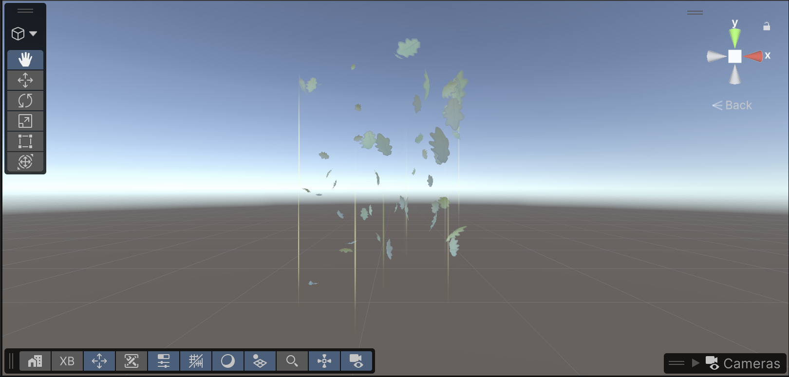
Screenshot from Unity's Scene Window of a Whirlwind Sprite Sheet Animation
Sound Effects
One of the sprite sheet animations that I imported came with a looping ‘magical’ audio effect attached in the inspector using the Audio Source component. I decided that I liked this effect so I recreated the structure of this component and assigned the audio to the prefab that spawns on the tracked image.
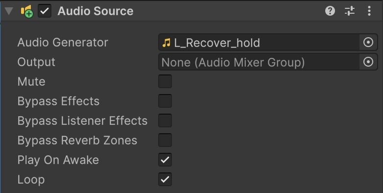
Screenshot of the Audio Source Component in the Prefab Inspector.
File Structure
After I’d created the Tracked Image Content parent object, I ended up creating a second empty parent object called visuals for reasons that are apparent in the next step.
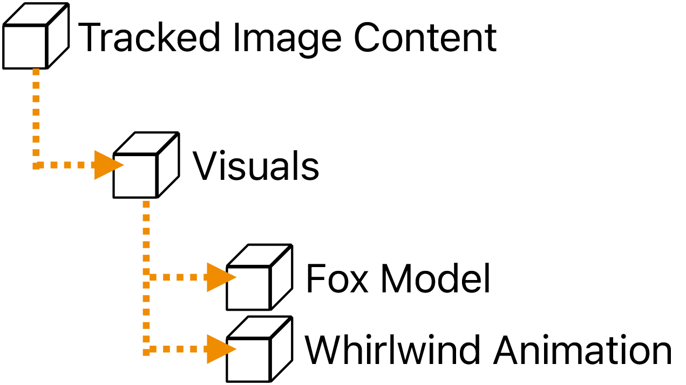
Diagram of Unity File Structure Hierarchy
TrackedImageFX
I decided that I wanted to use the sprite sheet animations I had imported to create an initial ‘spawn’ effect when the image is first detected or removed as a sort of visual indicator. The following section outlines the process of implementing this.
Referencing the ‘Visuals’ Parent Object:
I began by creating a C# script I called TrackedImageFX which I assigned to the
TrackedImageContent object in the inspector.
Inside the TrackedImageContent object I then created the ‘Visuals’ empty game object. All prefabs that appear on the tracked images are parented to this game object and in the new script this object is referenced with:
Hiding Visuals Initially
This script triggers the Visuals object and all children (models, animations etc) depending on whether the image is currently being tracked. The visuals are hidden initially, ensuring that nothing spawns until the image has been detected:
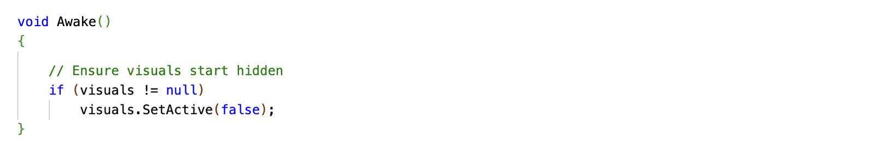
Technologies, U. (n.d.) Deactivate gameobjects, Unity. Available at: https://docs.unity3d.com/Manual/DeactivatingGameObjects.html
Update() and Boolean Logic
In Unity the Update() method runs every frame. Within this script, Its purpose is to
monitor changes
in the images tracking state. I quickly learnt that if I simply implemented a statement where if
'TrackingState = Tracking', trigger visuals; this would cause the animation effect to
keep playing
while tracking remains true. To combat this I introduced a Boolean variable which stores the
tracking state from the previous update. Therefore, each frame the current tracking state is
compared with the stored state. This enables the script to determine if a change has occurred which
if it has, then the animation is triggered. This boolean logic effectively creates a toggling
system.
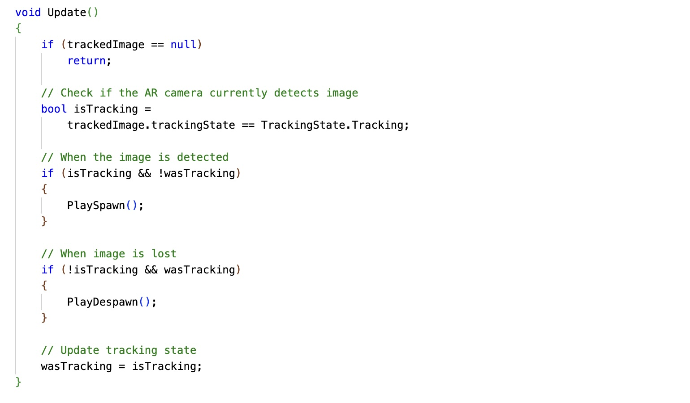
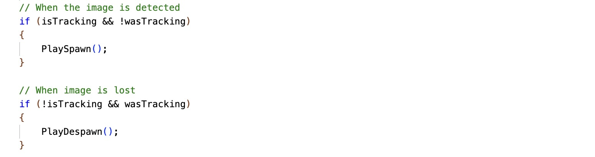
Enum trackingstate: Ar Subsystems: 3.0.0 (n.d.) AR Subsystems | 3.0.0. Available at: https://docs.unity3d.com/Packages/com.unity.xr.arsubsystems@3.0/api/UnityEngine.XR.ARSubsystems.TrackingState.html
Spawn/Despawn Animation
I opted for an explosive/water splash effect from the spite sheet animation assets I had imported. This was assigned to the inspector of TrackedImageContent as ‘spawn/despawn effect prefab’:
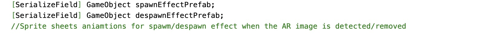
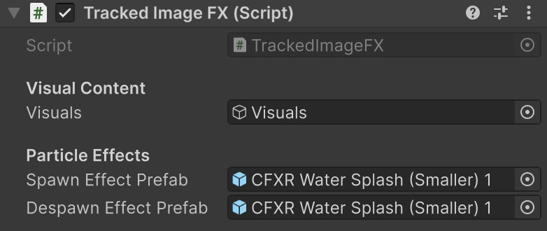
Spawn/Despawn Animation Fields in the TrackedImageContent Inspector.
When the image starts tracking, or was tracking but then stops, the PlaySpawn() method
is called which
triggers the animation associated with the Spawn Effect prefab at the same position and rotation as
the tracked image:
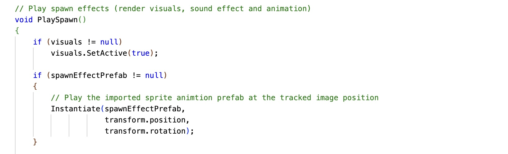
The same process occurs when the detected image becomes lost and the PlayDespawn method is triggered:
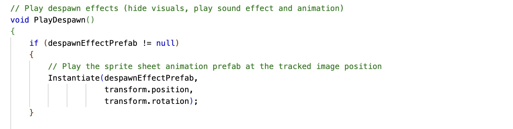
Once implemented, this script triggers an explosion effect when other tracked image content appears/disappears on the marker.
Technologies, U. (n.d.)Object.instantiate, Unity. Available at: https://docs.unity3d.com/ScriptReference/Object.Instantiate.html
Technologies, U. (n.d.)Serializefield, Unity. Available at: https://docs.unity3d.com/ScriptReference/SerializeField.html
Sound Effect Integration
Given that I had decided to go with an explosion effect, I thought it fitting to find a sound effect to match this. I went to FreeSound; a website where you can source free sound effects shared by people. I downloaded a sound and imported it into Unity.
I assigned the sound effect to the TrackedImageContent prefab using the script in a similar manner:
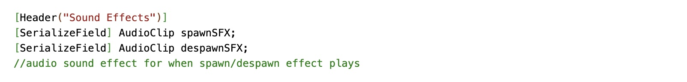
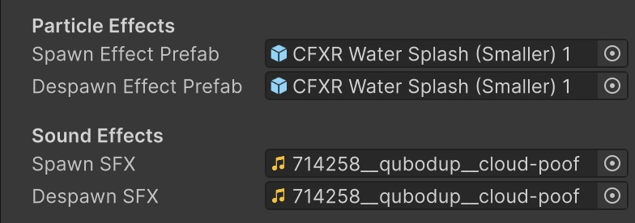
Audio Fields in the TrackedImageContent Inspector.
When the spawn effect is triggered upon image detection, the script triggers the audio effect using:
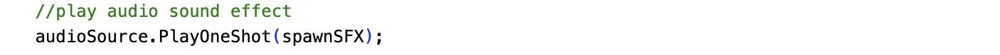
I usedPlayOneShot() because it plays the sound once, immediately and does not require
manual
stopping. I employed the same method to create this effect inside of PlayDespawn()
Unity Documentation. (2018).AudioSource.PlayOneShot. Available at: https://docs.unity3d.com/2018.1/Documentation/ScriptReference/AudioSource.PlayOneShot.html
Tracking Multiple Images
The following section outlines how I expanded on my Unity project to introduce multiple image markers by first importing a new image into Unity and re-structuring the prefab hierarchy.
'FoxWorld'
To begin with, in order to engage certain groups of prefabs e.g. models and animations on individual cards I needed to parent them to specific game objects per card. I had started thinking of the content on the card as a little world, hence I created the world naming system.
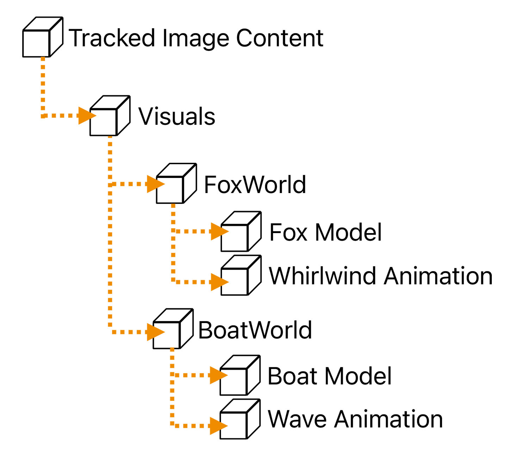
Diagram of the New File Structure Hierarchy.
Prepping the Reference Image Library
I imported a new image into Unity of the second card I hoped to track. I added this to the reference image library in the XR origin and gave it dimensions and a unique name.
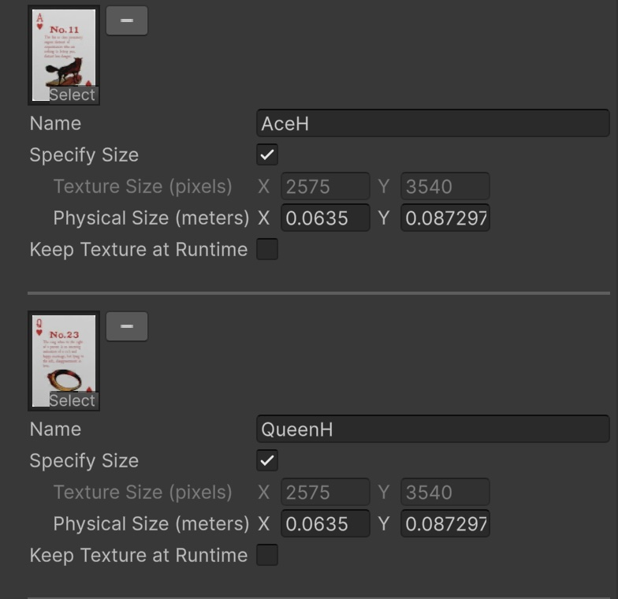
Screenshot of Unity - Reference Image Library.
MultiCardController
Here I describe the methods I used in a new C# script called
Serializable Classes
I assigned the new MultiCardController script to the TrackedImageContent game object. To configure the different tracked images to specific game objects or ‘worlds’ I implemented a serializable class in the script.
Marking a class with [System.Serializable] enables Unity to display it as a field in
the inspector.
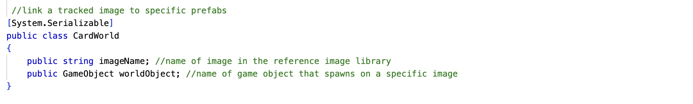
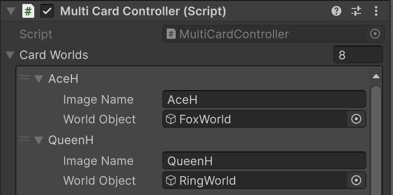
Serialized 'World' Fields in the TrackedImageContent Inspector.
Comp-3 Interactive (2020). Serializing Custom Classes [Unity Tutorial]. Available at: https://www.youtube.com/watch?v=5fhTXnos_go
Accessing the ARTrackedImage Component
The script needs to retrieve the ARTrackedImage component attached to the Tracked Image Content
object. The technique GetComponent<>() retrieves this component at runtime.
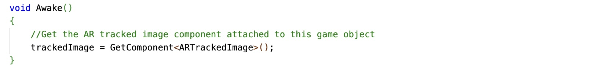
Technologies, U. (n.d.) Component.getcomponent, Unity. Available at: https://docs.unity3d.com/ScriptReference/Component.GetComponent.html
Identifying the Correct Game Object Based on Image Name
By using string comparison in C# The script is able to identify which game object / ‘world’ should be active for each image by first reading:
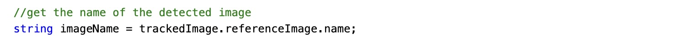
And then comparing this against each entry field in the inspector:
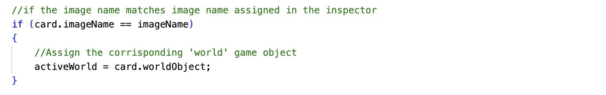
Dev Leader (2023). Beginner’s Guide For Comparing Strings in C#. Available at: https://www.youtube.com/watch?v=nFFKfbuOvQw
View (2017). How to do For Each Loops in – Unity C#. Available at: https://stuartspixelgames.com/2017/03/27/how-to-do-for-each-loops-in-unity-c/
Enabling and Disabling Game Objects
Initially, all game objects are disabled, and corresponding game objects assigned to images are
stored as shown in the previous section with activeWorld = card.worldObject;
If an image is then detected, and if I have assigned a game object to it, the
setActive() method
triggers the game object to spawn:
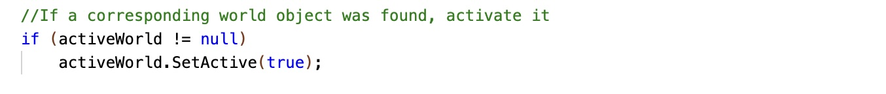
Technologies, U. (n.d.)GameObject.SetActive, Unity. Available at: https://docs.unity3d.com/ScriptReference/GameObject.SetActive.html
Tracking State
Inside Update() the script continuously checks whether the image is detected/lost using
a method
called TrackingState. There are three possible tracking states for AR Tracked Images;
None, Limited
and Tracking, where the AR SDK reports that it is actively tracking the image. Using the
TrackingState property I am toggling game object visibility depending on whether the image is being
actively tracked. While tracking is active the world object is enabled and if tracking is lost i.e
it is registered as limited or none, the world object is disabled.
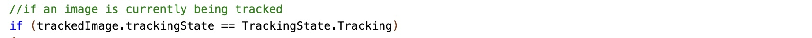
Unity.cn. (2023).AR Tracked Image Manager component | AR Foundation | 5.1.0-pre.8. Available at: https://docs.unity.cn/Packages/com.unity.xr.arfoundation%405.1/manual/features/image-tracking.html
Expansion
Once I’d implemented multi image tracking I used the rest of the time I had available for this project to expand on the number of functioning playing cards. Effectively I just repeated certain steps in order to have more tracked images and unique prefabs assigned to those images.
Downloaded Assets
Sound Effect
- Cloud Poof by qubodup — https://freesound.org/s/714258/ License: Attribution 4.0
3D Models
- Hand by Dirk.z — https://skfb.ly/6GIow Creative Commons Attribution 4.0
- Golden Ring by FishyBusiness — https://skfb.ly/orPYo Creative Commons Attribution 4.0
- Book / Spellbook Low Poly by Abel099 — https://skfb.ly/p8vYr Creative Commons Attribution 4.0
Unity Asset Store – VFX
- Cartoon FX Remaster Free — Unity Asset Store
- Free Game VFX Collection (URP) — Unity Asset Store
- Fantasy Effects Pack — Unity Asset Store